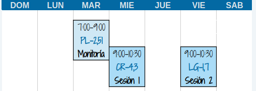

Empieza aquí
Este es un curso con metodología de AULA INVERTIDA.
Antes de cada sesión se recomienda revisar la guía y los recursos de la
unidad, realizar la práctica indicada y registrar tus dudas. En la
sesión de clase aplicaremos lo estudiado a problemas y datos reales.
En el Módulo 0 podrá encontrar temas prerrequisitos para abordar los
temas de los módilos del curso.
Cada unidad estará acompañada de :
- Guia : recoge las orientaciones relacioandas con el
objetivo, actividades a realizar y fechas de ejecución y entrega de las
actividades.
- Recurso : contiene los temas de la unidad acopañado
de ejemplos
- Código : contiene códigos y ejemplos con sus
respectivas sintaxis
El trabajo de cada unidad sigue esta secuencia:
- Antes de la sesión 1: lee la guía, estudia el
recurso, ejecuta los ejemplos y anota tus dudas.
- Monitoría: sesión de acompañamiento por un monitor
en el desarrollo de las actividades propuestas.
- Durante la sesión 2: contrasta tus ideas, resuelve
problemas, recibe retroalimentación y aplica los conceptos.
- Después de la sesión 2: corrige tu trabajo,
completa la actividad y entrega la evidencia por el canal indicado en la
guía y en Brightspace.
Las fechas, los formatos y los criterios específicos se consultan
siempre en la guía de la unidad.
Salones de clase

Monitor : Juan David Naranjo Zapata
Atención estudiantes
Supletorios